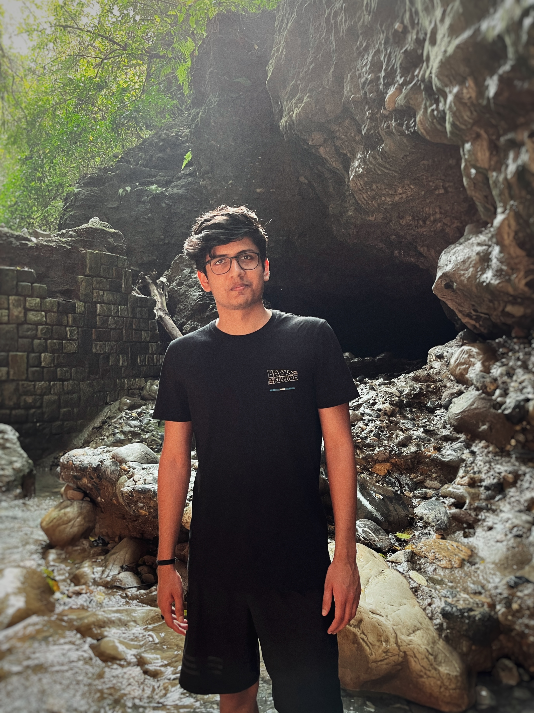

Tanmay Khandelwal
f20170106p at alumni.bits-pilani.ac.in (Preferred)
tk3309 at nyu.edu
Resume/CV

I have professional experience as a Machine Learning Engineer at Fortemedia in Singapore. Prior to this role, I had the opportunity to collaborate with Prof. Chng Eng Siong at the Speech and Language Lab in NTU, Singapore, which focuses on natural language processing and speech recognition research.
In my current research, I concentrate on areas such as sound event detection, natural language processing, and speech processing.
Publications
A Multi-Task Learning Framework for Sound Event Detection using High-level Acoustic Characteristics of Sounds
Tanmay Khandelwal, Rohan Kumar Das
INTERSPEECH 2023
Exploring Multi-Task Learning with Weighted Soft Label Loss for Sound Event Detection with Soft Labels
Tanmay Khandelwal, Rohan Kumar Das
DCASE Workshop 2023 (Submitted)
Cross-dimensional Interaction with Inverted Residual Triplet Attention for Low-complexity Sound Event Detection
Tanmay Khandelwal, Rohan Kumar Das
DCASE Workshop 2023 (Submitted)
FMSG Submission for DCASE 2023 Challenge Task 4 on Sound Event Detection with Weak Labels and Synthetic Soundscapes
Yang Xiao, Tanmay Khandelwal, Rohan Kumar Das
DCASE Challenge 2023
Leveraging Audio-Tagging Assisted Sound Event Detection using Weakified Strong Labels and Frequency Dynamic Convolutions
Tanmay Khandelwal, Rohan Kumar Das, Andew Koh, Eng Siong Chng
IEEE Statistical Signal Processing Workshop (SSP) 2023
Dynamic Thresholding on FixMatch with Weak and Strong Data Augmentations for Sound Event Detection
Tanmay Khandelwal, Rohan Kumar Das
International Symposium on Chinese Spoken Language Processing (ISCSLP) 2022
Is Your Baby Fine at Home? Baby Cry Sound Detection in Domestic Environments
Tanmay Khandelwal, Rohan Kumar Das, Eng Siong Chng
Asia-Pacific Signal and Information Processing Association Annual Summit and Conference (APSIPA ASC) 2022
FMSG-NTU submission for DCASE 2022 Task 4 on sound event detection in domestic environments
Tanmay Khandelwal, Rohan Kumar Das, Andrew Koh, Eng Siong Chng
DCASE Challenge 2022
Teaching
Sound Event Detection Session, 2021
Teaching assistant to Professor Eng Siong Chng
Microelectronics Circuit (BITS EEE F244, Spring 2020)
Teaching assistant to Professor Anu Gupta